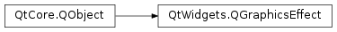
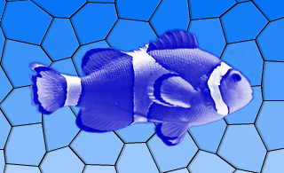

QGraphicsEffect¶
Inherited by: QGraphicsColorizeEffect, QGraphicsBlurEffect, QGraphicsDropShadowEffect, QGraphicsOpacityEffect
Note
This class was introduced in Qt 4.6.
Synopsis¶
Functions¶
- def
boundingRect() - def
drawSource(painter) - def
isEnabled() - def
sourceBoundingRect([system=Qt.LogicalCoordinates]) - def
sourceIsPixmap() - def
sourcePixmap([system=Qt.LogicalCoordinates[, offset=nullptr[, mode=PadToEffectiveBoundingRect]]]) - def
updateBoundingRect()
Virtual functions¶
- def
boundingRectFor(sourceRect) - def
draw(painter) - def
sourceChanged(flags)
Slots¶
- def
setEnabled(enable) - def
update()
Signals¶
- def
enabledChanged(enabled)
Detailed Description¶
The
PySide2.QtWidgets.QGraphicsEffectclass is the base class for all graphics effects.Effects alter the appearance of elements by hooking into the rendering pipeline and operating between the source (e.g., a
PySide2.QtWidgets.QGraphicsPixmapItem) and the destination device (e.g.,PySide2.QtWidgets.QGraphicsView‘s viewport). Effects can be disabled by callingPySide2.QtWidgets.QGraphicsEffect.setEnabled()(false). If effects are disabled, the source is rendered directly.To add a visual effect to a
PySide2.QtWidgets.QGraphicsItem, for example, you can use one of the standard effects, or alternately, create your own effect by creating a subclass ofPySide2.QtWidgets.QGraphicsEffect. The effect can then be installed on the item usingQGraphicsItem.setGraphicsEffect().Qt provides the following standard effects:
PySide2.QtWidgets.QGraphicsBlurEffect- blurs the item by a given radiusPySide2.QtWidgets.QGraphicsDropShadowEffect- renders a dropshadow behind the itemPySide2.QtWidgets.QGraphicsColorizeEffect- renders the item in shades of any given colorPySide2.QtWidgets.QGraphicsOpacityEffect- renders the item with an opacity


 


For more information on how to use each effect, refer to the specific effect’s documentation.
To create your own custom effect, create a subclass of
PySide2.QtWidgets.QGraphicsEffect(or any other existing effects) and reimplement the virtual functionPySide2.QtWidgets.QGraphicsEffect.draw(). This function is called whenever the effect needs to redraw. ThePySide2.QtWidgets.QGraphicsEffect.draw()function takes the painter with which to draw as an argument. For more information, refer to the documenation forPySide2.QtWidgets.QGraphicsEffect.draw(). In thePySide2.QtWidgets.QGraphicsEffect.draw()function you can callPySide2.QtWidgets.QGraphicsEffect.sourcePixmap()to get a pixmap of the graphics effect source which you can then process.If your effect changes, use
PySide2.QtWidgets.QGraphicsEffect.update()to request for a redraw. If your custom effect changes the bounding rectangle of the source, e.g., a radial glow effect may need to apply an extra margin, you can reimplement the virtualPySide2.QtWidgets.QGraphicsEffect.boundingRectFor()function, and callPySide2.QtWidgets.QGraphicsEffect.updateBoundingRect()to notify the framework whenever this rectangle changes. The virtualPySide2.QtWidgets.QGraphicsEffect.sourceChanged()function is called to notify the effects that the source has changed in some way - e.g., if the source is aPySide2.QtWidgets.QGraphicsRectItemand its rectangle parameters have changed.
-
class
PySide2.QtWidgets.QGraphicsEffect([parent=nullptr])¶ Parameters: parent – PySide2.QtCore.QObjectConstructs a new
PySide2.QtWidgets.QGraphicsEffectinstance having the specifiedparent.
-
PySide2.QtWidgets.QGraphicsEffect.ChangeFlag¶ This enum describes what has changed in QGraphicsEffectSource.
Constant Description QGraphicsEffect.SourceAttached The effect is installed on a source. QGraphicsEffect.SourceDetached The effect is uninstalled on a source. QGraphicsEffect.SourceBoundingRectChanged The bounding rect of the source has changed. QGraphicsEffect.SourceInvalidated The visual appearance of the source has changed.
-
PySide2.QtWidgets.QGraphicsEffect.PixmapPadMode¶ This enum describes how the pixmap returned from
PySide2.QtWidgets.QGraphicsEffect.sourcePixmap()should be padded.Constant Description QGraphicsEffect.NoPad The pixmap should not receive any additional padding. QGraphicsEffect.PadToTransparentBorder The pixmap should be padded to ensure it has a completely transparent border. QGraphicsEffect.PadToEffectiveBoundingRect The pixmap should be padded to match the effective bounding rectangle of the effect.
-
PySide2.QtWidgets.QGraphicsEffect.boundingRect()¶ Return type: PySide2.QtCore.QRectFReturns the effective bounding rectangle for this effect, i.e., the bounding rectangle of the source in device coordinates, adjusted by any margins applied by the effect itself.
-
PySide2.QtWidgets.QGraphicsEffect.boundingRectFor(sourceRect)¶ Parameters: sourceRect – PySide2.QtCore.QRectFReturn type: PySide2.QtCore.QRectFReturns the effective bounding rectangle for this effect, given the provided
rectin the device coordinates. When writing you own custom effect, you must callPySide2.QtWidgets.QGraphicsEffect.updateBoundingRect()whenever any parameters are changed that may cause this this function to return a different value.
-
PySide2.QtWidgets.QGraphicsEffect.draw(painter)¶ Parameters: painter – PySide2.QtGui.QPainterThis pure virtual function draws the effect and is called whenever the source needs to be drawn.
Reimplement this function in a
PySide2.QtWidgets.QGraphicsEffectsubclass to provide the effect’s drawing implementation, usingpainter.For example:
def draw(self, painter): # ... offset = QPoint() if self.sourceIsPixmap(): # No point in drawing in device coordinates (pixmap will be scaled anyways). pixmap = sourcePixmap(Qt.LogicalCoordinates, offset) ... painter.drawPixmap(offset, pixmap) else: # Draw pixmap in device coordinates to avoid pixmap scaling pixmap = sourcePixmap(Qt.DeviceCoordinates, offset) painter.setWorldTransform(QTransform()) # ... painter.drawPixmap(offset, pixmap) # ...
This function should not be called explicitly by the user, since it is meant for reimplementation purposes only.
-
PySide2.QtWidgets.QGraphicsEffect.drawSource(painter)¶ Parameters: painter – PySide2.QtGui.QPainterDraws the source directly using the given
painter.This function should only be called from
QGraphicsEffect.draw().For example:
def draw(self, painter): # Fully opaque draw directly without going through a pixmap. if qFuzzyCompare(self.opacity, 1): drawSource(painter) return # ...
See also
-
PySide2.QtWidgets.QGraphicsEffect.enabledChanged(enabled)¶ Parameters: enabled – PySide2.QtCore.bool
-
PySide2.QtWidgets.QGraphicsEffect.isEnabled()¶ Return type: PySide2.QtCore.bool
-
PySide2.QtWidgets.QGraphicsEffect.setEnabled(enable)¶ Parameters: enable – PySide2.QtCore.bool
-
PySide2.QtWidgets.QGraphicsEffect.sourceBoundingRect([system=Qt.LogicalCoordinates])¶ Parameters: system – PySide2.QtCore.Qt.CoordinateSystemReturn type: PySide2.QtCore.QRectFReturns the bounding rectangle of the source mapped to the given
system.Calling this function with
Qt.DeviceCoordinatesoutside ofQGraphicsEffect.draw()will give undefined results, as there is no device context available.
-
PySide2.QtWidgets.QGraphicsEffect.sourceChanged(flags)¶ Parameters: flags – PySide2.QtWidgets.QGraphicsEffect.ChangeFlagsThis virtual function is called by
PySide2.QtWidgets.QGraphicsEffectto notify the effect that the source has changed. If the effect applies any cache, then this cache must be purged in order to reflect the new appearance of the source.The
flagsdescribes what has changed.
-
PySide2.QtWidgets.QGraphicsEffect.sourceIsPixmap()¶ Return type: PySide2.QtCore.boolReturns
trueif the source effectively is a pixmap, e.g., aPySide2.QtWidgets.QGraphicsPixmapItem.This function is useful for optimization purposes. For instance, there’s no point in drawing the source in device coordinates to avoid pixmap scaling if this function returns
true- the source pixmap will be scaled anyways.
-
PySide2.QtWidgets.QGraphicsEffect.sourcePixmap([system=Qt.LogicalCoordinates[, offset=nullptr[, mode=PadToEffectiveBoundingRect]]])¶ Parameters: - system –
PySide2.QtCore.Qt.CoordinateSystem - offset –
PySide2.QtCore.QPoint - mode –
PySide2.QtWidgets.QGraphicsEffect.PixmapPadMode
Return type: Returns a pixmap with the source painted into it.
The
systemspecifies which coordinate system to be used for the source. The optionaloffsetparameter returns the offset where the pixmap should be painted at using the current painter. For control on how the pixmap is padded use themodeparameter.The returned pixmap is clipped to the current painter’s device rectangle when
systemisQt.DeviceCoordinates.Calling this function with
Qt.DeviceCoordinatesoutside ofQGraphicsEffect.draw()will give undefined results, as there is no device context available.- system –
-
PySide2.QtWidgets.QGraphicsEffect.update()¶ Schedules a redraw of the effect. Call this function whenever the effect needs to be redrawn. This function does not trigger a redraw of the source.
-
PySide2.QtWidgets.QGraphicsEffect.updateBoundingRect()¶ This function notifies the effect framework when the effect’s bounding rectangle has changed. As a custom effect author, you must call this function whenever you change any parameters that will cause the virtual
PySide2.QtWidgets.QGraphicsEffect.boundingRectFor()function to return a different value.This function will call
PySide2.QtWidgets.QGraphicsEffect.update()if this is necessary.
© 2018 The Qt Company Ltd. Documentation contributions included herein are the copyrights of their respective owners. The documentation provided herein is licensed under the terms of the GNU Free Documentation License version 1.3 as published by the Free Software Foundation. Qt and respective logos are trademarks of The Qt Company Ltd. in Finland and/or other countries worldwide. All other trademarks are property of their respective owners.